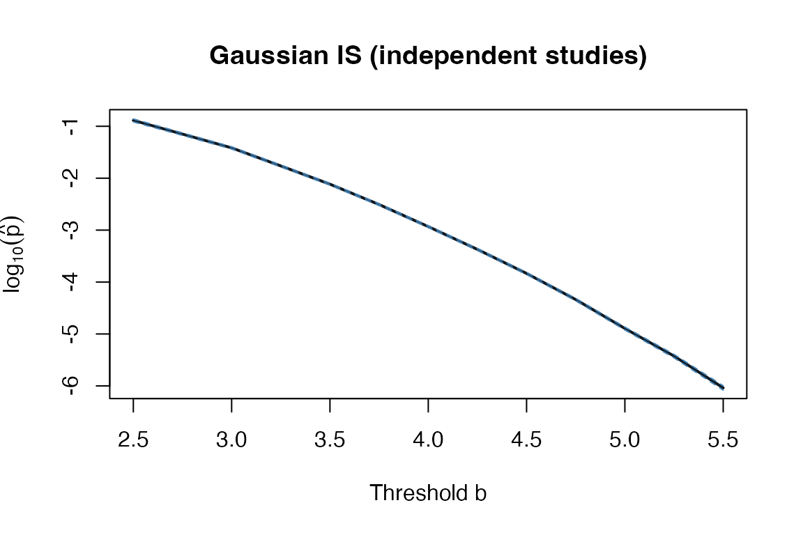

Introduction to assetIS
Samuel Anyaso-Samuel
2026-03-25
Source:vignettes/introduction.Rmd
introduction.RmdOverview
The assetIS package provides importance sampling (IS) estimators of extreme tail probabilities for the ASSET subset-based meta-analysis statistic (Bhattacharjee et al., 2012). The ASSET statistic is where the maximum is taken over all non-empty subsets of studies (or cell types). Computing the significance of requires evaluating an extreme tail probability, which is computationally prohibitive by naive Monte Carlo when the p-value is very small.
IS solves this by exponentially tilting the simulation distribution toward the region of interest, achieving substantial variance reductions. The package implements four estimators:
| Setting | Independent | Correlated |
|---|---|---|
| Large-sample (Gaussian) | asset_is_pvalue_ind() |
asset_is_pvalue_corr() |
| Small-sample (non-Gaussian) | asset_is_nonnorm_ind() |
asset_is_nonnorm_corr() |
Gaussian IS: Independent Studies
Setup
Consider independent studies with moderate sample sizes. The Gaussian IS is appropriate when each under the null.
Single threshold
res_single <- asset_is_pvalue_ind(
z = z,
n = n,
b = b_obs,
K = 5000L,
two.sided = TRUE,
seed = 1L
)
print(res_single)
#> b p.est p.se p.lower p.upper xi K
#> 1 3.1 0.02854922 0.0007158398 0.02714617 0.02995226 3.1 5000Range of thresholds
When b is a vector, a single tilting parameter
is reused, making the call no more expensive than a single
threshold.
b_grid <- seq(2.5, 5.5, by = 0.25)
res_range <- asset_is_pvalue_ind(
z = z,
n = n,
b = b_grid,
K = 1e4L,
two.sided = TRUE,
seed = 2L
)
head(res_range)
#> b p.est p.se p.lower p.upper xi K
#> 1 2.50 0.129859588 4.277290e-03 0.121476100 0.138243076 4 10000
#> 2 2.75 0.070631922 1.928003e-03 0.066853035 0.074410809 4 10000
#> 3 3.00 0.038349923 9.511407e-04 0.036485687 0.040214158 4 10000
#> 4 3.25 0.017220666 3.914875e-04 0.016453350 0.017987981 4 10000
#> 5 3.50 0.007671906 1.625664e-04 0.007353276 0.007990537 4 10000
#> 6 3.75 0.003107423 6.618144e-05 0.002977707 0.003237139 4 10000
plot(res_range$b, log10(res_range$p.est),
type = "l", lwd = 2,
xlab = "Threshold b", ylab = expression(log[10](hat(p))),
main = "Gaussian IS (independent studies)")
polygon(c(res_range$b, rev(res_range$b)),
log10(c(res_range$p.upper, rev(res_range$p.lower))),
col = adjustcolor("steelblue", 0.2), border = NA)
lines(res_range$b, log10(res_range$p.lower), lty = 2, col = "steelblue")
lines(res_range$b, log10(res_range$p.upper), lty = 2, col = "steelblue")
IS p-value estimates over a grid of thresholds (log scale). Shaded band is a 95% confidence interval.
Case-control studies
For case-control data, replace with the effective sample size , where is the case fraction in study .
phi <- c(0.30, 0.40, 0.50, 0.35, 0.45)
n_eff <- n * phi * (1 - phi)
asset_is_pvalue_ind(
z = z,
n = n_eff,
b = b_obs,
K = 5000L,
two.sided = TRUE,
seed = 3L
)
#> b p.est p.se p.lower p.upper xi K
#> 1 3.1 0.02599386 0.0006764795 0.02466796 0.02731976 3.1 5000Gaussian IS: Correlated Studies
When studies share subjects, the score statistics are correlated with known correlation matrix .
rho <- 0.35
Sigma <- outer(seq_len(M), seq_len(M), function(i, j) rho^abs(i - j))
res_corr <- asset_is_pvalue_corr(
z = z,
n = n,
Sigma = Sigma,
b = b_obs,
K = 5000L,
two.sided = TRUE,
seed = 4L
)
print(res_corr)
#> b p.est p.se p.lower p.upper xi K
#> 1 3.1 0.02008811 0.0005618315 0.01898692 0.0211893 3.1 5000Non-Gaussian IS: Independent Cell Types
When sample sizes are small (e.g., single-cell eQTL, rare-disease meta-analysis), the Gaussian approximation fails. The non-Gaussian IS operates conditional on the observed phenotype matrix , simulating genotypes from a discrete Hardy–Weinberg distribution.
eQTL setting
We consider cell types, subjects, and MAF .
set.seed(42)
N <- 100; C <- 5; f <- 0.15
## Centered and scaled expression matrix
Y <- scale(matrix(rnorm(N * C), N, C))
## Simulate a genotype vector and compute the ASSET statistic
g <- rbinom(N, 2, f)
sigma_g <- sqrt(2 * f * (1 - f))
z_eqtl <- as.numeric(crossprod(Y, g - 2 * f)) / (sqrt(N) * sigma_g)
b_eqtl <- max(abs(z_eqtl))
cat("Observed ASSET (eQTL):", round(b_eqtl, 3), "\n")
#> Observed ASSET (eQTL): 0.968
res_eqtl <- asset_is_nonnorm_ind(
Y = Y,
f = f,
b = b_eqtl,
K = 2000L,
two.sided = TRUE,
seed = 5L
)
print(res_eqtl)
#> b p.est p.se p.lower p.upper b_anchor K
#> 1 0.9678839 0.9275846 0.007981053 0.9119417 0.9432275 0.9678839 2000Case-control meta-analysis (same ancestry)
set.seed(7)
N_total <- 300
study_id <- sample(seq_len(C), N_total, replace = TRUE)
phi_c <- runif(C, 0.25, 0.40)
y_bin <- rbinom(N_total, 1, prob = phi_c[study_id])
## Build centered outcome matrix
Ycc <- matrix(0, N_total, C)
for (i in seq_len(N_total))
Ycc[i, study_id[i]] <- y_bin[i] - phi_c[study_id[i]]
## Compute score statistics using common MAF f = 0.2
f_cc <- 0.20
sigma_g <- sqrt(2 * f_cc * (1 - f_cc))
g_cc <- rbinom(N_total, 2, f_cc)
z_cc <- vapply(seq_len(C), function(c) {
idx <- which(study_id == c)
Nc <- length(idx)
sum(Ycc[idx, c] * (g_cc[idx] - 2 * f_cc)) /
(sqrt(Nc * phi_c[c] * (1 - phi_c[c])) * sigma_g)
}, numeric(1L))
b_cc <- max(abs(z_cc))
res_cc <- asset_is_nonnorm_ind(
Y = Ycc,
f = f_cc,
b = b_cc,
study_id = study_id,
K = 2000L,
two.sided = TRUE,
seed = 8L
)
print(res_cc)
#> b p.est p.se p.lower p.upper b_anchor K
#> 1 1.8196 0.4290948 0.009828492 0.409831 0.4483586 1.8196 2000Multi-ancestry case-control (study-specific MAFs)
Pass a
length-
vector f to handle different allele frequencies across
ancestries.
f_multi <- c(0.15, 0.22, 0.10, 0.30, 0.18)
res_multi <- asset_is_nonnorm_ind(
Y = Ycc,
f = f_multi,
b = b_cc,
study_id = study_id,
K = 2000L,
two.sided = TRUE,
seed = 9L
)
print(res_multi)
#> b p.est p.se p.lower p.upper b_anchor K
#> 1 1.8196 0.5387196 0.01145833 0.5162612 0.5611779 1.8196 2000Non-Gaussian IS: Correlated Cell Types
When gene expression is correlated across cell types, the GLS-based estimator accounts for the empirical correlation .
set.seed(42)
N <- 150; C <- 5; f <- 0.15; rho <- 0.50
## Correlated expression data
if (requireNamespace("MASS", quietly = TRUE)) {
Sigma_expr <- (1 - rho) * diag(C) + rho
Y_corr <- MASS::mvrnorm(N, mu = rep(0, C), Sigma = Sigma_expr)
} else {
## fallback: independent columns
Y_corr <- matrix(rnorm(N * C), N, C)
}
Y_corr <- scale(Y_corr)
g <- rbinom(N, 2, f)
sigma_g <- sqrt(2 * f * (1 - f))
## GLS scores (approximate, using empirical Sigma_z)
Sigma_z_hat <- crossprod(Y_corr) / N
diag(Sigma_z_hat) <- 1
z_corr <- as.numeric(crossprod(Y_corr, g - 2 * f)) / (sqrt(N) * sigma_g)
b_corr <- max(abs(z_corr))
res_nncorr <- asset_is_nonnorm_corr(
Y = Y_corr,
f = f,
b = b_corr,
K = 2000L,
two.sided = TRUE,
scale_Y = FALSE, # already scaled
seed = 10L
)
print(res_nncorr)
#> b p.est p.se p.lower p.upper b_anchor K
#> 1 1.786694 0.2796077 0.008487158 0.2629729 0.2962426 1.786694 2000Parallel Computation
All four functions support parallel execution via
doParallel. Set parallel = TRUE and optionally
specify n.cores.
## Not run in vignette (requires multiple cores)
res_par <- asset_is_pvalue_ind(
z = z,
n = n,
b = b_grid,
K = 1e5L,
two.sided = TRUE,
parallel = TRUE,
n.cores = 4L,
seed = 99L
)Choosing the Number of Simulations
The table below gives approximate guidance on the number of simulations needed to achieve a relative error of roughly 10%.
| Target p-value | Naive MC | IS (approximate) |
|---|---|---|
For genome-wide significance () we recommend for the Gaussian estimators and for the non-Gaussian estimators with modest ().
Session Info
sessionInfo()
#> R version 4.5.1 (2025-06-13)
#> Platform: aarch64-apple-darwin20
#> Running under: macOS Tahoe 26.3
#>
#> Matrix products: default
#> BLAS: /Library/Frameworks/R.framework/Versions/4.5-arm64/Resources/lib/libRblas.0.dylib
#> LAPACK: /Library/Frameworks/R.framework/Versions/4.5-arm64/Resources/lib/libRlapack.dylib; LAPACK version 3.12.1
#>
#> locale:
#> [1] en_US.UTF-8/en_US.UTF-8/en_US.UTF-8/C/en_US.UTF-8/en_US.UTF-8
#>
#> time zone: America/New_York
#> tzcode source: internal
#>
#> attached base packages:
#> [1] stats graphics grDevices utils datasets methods base
#>
#> other attached packages:
#> [1] assetIS_0.1.0
#>
#> loaded via a namespace (and not attached):
#> [1] doParallel_1.0.17 cli_3.6.5 knitr_1.51 rlang_1.1.6
#> [5] xfun_0.55 otel_0.2.0 textshaping_1.0.4 jsonlite_2.0.0
#> [9] htmltools_0.5.9 ragg_1.5.0 sass_0.4.10 rmarkdown_2.30
#> [13] evaluate_1.0.5 jquerylib_0.1.4 MASS_7.3-65 fastmap_1.2.0
#> [17] yaml_2.3.12 foreach_1.5.2 lifecycle_1.0.4 compiler_4.5.1
#> [21] codetools_0.2-20 fs_1.6.6 htmlwidgets_1.6.4 rstudioapi_0.17.1
#> [25] systemfonts_1.3.1 digest_0.6.39 R6_2.6.1 parallel_4.5.1
#> [29] bslib_0.9.0 tools_4.5.1 iterators_1.0.14 pkgdown_2.2.0
#> [33] cachem_1.1.0 desc_1.4.3References
Bhattacharjee S, Rajaraman P, Bhattacharjee S, et al. (2012). A subset-based approach improves power and interpretation for the combined analysis of genetic association studies of heterogeneous traits. American Journal of Human Genetics, 90(5), 821–835.
Shi J and Siegmund D (2007). Importance sampling for estimating p-values in linkage analysis. Journal of the American Statistical Association, 102(479), 929–937.
Siegmund D (1976). Importance sampling in the Monte Carlo study of sequential tests. The Annals of Statistics, 4(4), 673–684.